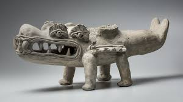
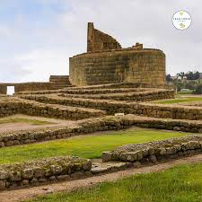
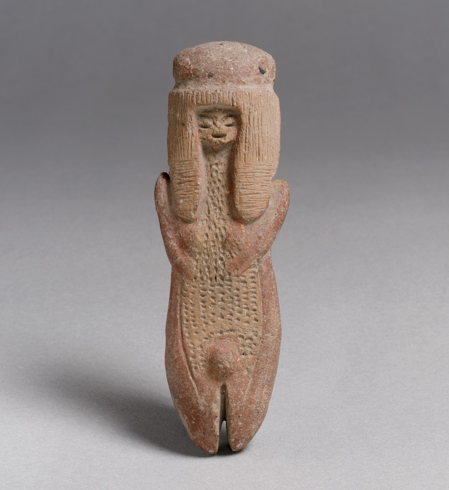
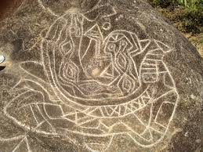
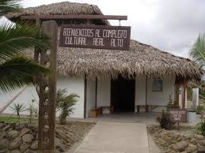
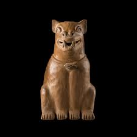

Reliquia 1

Cultura La Tolita
Objetos de oro, cerámica y tumbas que evidencian contactos con culturas mesoamericanas.
Fecha estimada: 600 a.C. – 200 d.C.Artefactos de oro y cerámica de la costa ecuatoriana que muestran influencias mesoamericanas.
Más información sobre las reliquias ecuatorianas...

Objetos de oro, cerámica y tumbas que evidencian contactos con culturas mesoamericanas.
Fecha estimada: 600 a.C. – 200 d.C.
Ruinas incas con templos y fortalezas en la sierra ecuatoriana, mostrando la expansión del imperio.
Fecha estimada: 1400 d.C. – 1533 d.C.
Figuras de cerámica y asentamientos costeros que representan una de las culturas más antiguas de Ecuador.
Fecha estimada: 3500 a.C. – 1800 a.C.
Grabados en piedras que incluyen figuras geométricas y zoomorfas en la provincia de Pichincha.
Fecha estimada: 1000 a.C. – 500 d.C.
Asentamientos con arquitectura compleja y cerámica en la costa ecuatoriana.
Fecha estimada: 2000 a.C. – 1000 a.C.
Cerámica policroma y tumbas que muestran influencias de culturas vecinas en Manabí.
Fecha estimada: 500 a.C. – 500 d.C.